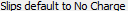

# sets up a new bank account # sets up new funds accounts for Hadley and Halifax # these accounts will be used with bank deposit slips from sikuli import * import logging import myTools # - - - - - - - - - - - - - - - - - - - - - - - - - # def fFundsAccount_Create(pFundsClient,pFundsCount): # - - - - - - - - - - - - - - - - - - - - - - - - - # logging.debug('- FundsAccount_Create: ' + pFundsClient) # open client type(pFundsClient) type(Key.ENTER) if int(Settings.tsVersion) > 2014: wait(,FOREVER) else: wait(,FOREVER) # move to funds page / move to funds list myTools.pressSHIFTF6(3) myTools.pressTAB(3) time.sleep(1) # new funds account type("n",KeyModifier.CTRL + KeyModifier.SHIFT) # funds details time.sleep(1) # name fundsName = pFundsClient + "-" + str(pFundsCount) type(fundsName) myTools.pressTAB(1) # bank account type(Key.END) if int(Settings.tsVersion) > 2014: myTools.pressTAB(1) else: myTools.pressTAB(2) # applies to type(Key.END) myTools.pressTAB(1) # current balance fundsBalance = pFundsCount * 10 + pFundsCount/float(100) type(str(fundsBalance)) myTools.pressTAB(1) # falls below fallsBelow = pFundsCount * 10 - 1 type(str(fallsBelow)) myTools.pressTAB(1) # replenish to replenish = pFundsCount * 10 type(str(replenish)) myTools.pressTAB(1) # style on bill myTools.pressTAB(1) time.sleep(1) # auto pay type(Key.SPACE) time.sleep(1) # OK type(Key.ENTER) time.sleep(1) # save type("s",KeyModifier.CTRL) time.sleep(1) # close type(Key.F4,KeyModifier.CTRL) time.sleep(1) # - - - - - - - - - - - - - - - - - - - - - - - - - # def fBankAccount_Create(): # - - - - - - - - - - - - - - - - - - - - - - - - - # logging.debug('- BankAccount_Create') # bank accounts type("p",KeyModifier.ALT) type("b") time.sleep(1) # new type("n",KeyModifier.ALT) time.sleep(1) # name type("New Bank") myTools.pressTAB(1) time.sleep(1) # applies: costs only type("c") myTools.pressTAB(1) time.sleep(1) # type myTools.pressTAB(1) # description type("new bank account") myTools.pressTAB(1) # pfa type("pfa - new bank") myTools.pressTAB(1) # pta type("pta - new bank") myTools.pressTAB(1) # dep type("dep - new bank") myTools.pressTAB(1) # wit type("wit - new bank") myTools.pressTAB(1) # bal type("bal - new bank") myTools.pressTAB(1) # number type("9000") myTools.pressTAB(1) # OK time.sleep(1) type(Key.ENTER) # Done myTools.pressTAB(5) type(Key.ENTER) # - - - - - - - - - - - - - - - - - - - - - - - - - # def fFundsAccouts_Setup(): # - - - - - - - - - - - - - - - - - - - - - - - - - # myTools.sectionStartTimeStamp("funds account") logging.debug('FundsAccount_Setup') # make sure timeslips has focus myTools.getFocus() fBankAccount_Create() # open client list type("i",KeyModifier.CTRL) time.sleep(1) clientList = ["Hadley","Halifax"] count = 0 for oneCli in clientList: count += 1 fFundsAccount_Create(oneCli,count) type(Key.F4,KeyModifier.CTRL) myTools.sectionEndTimeStamp()